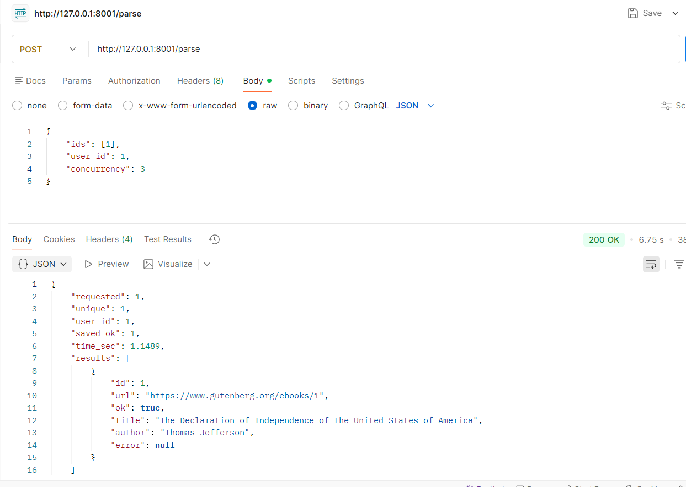
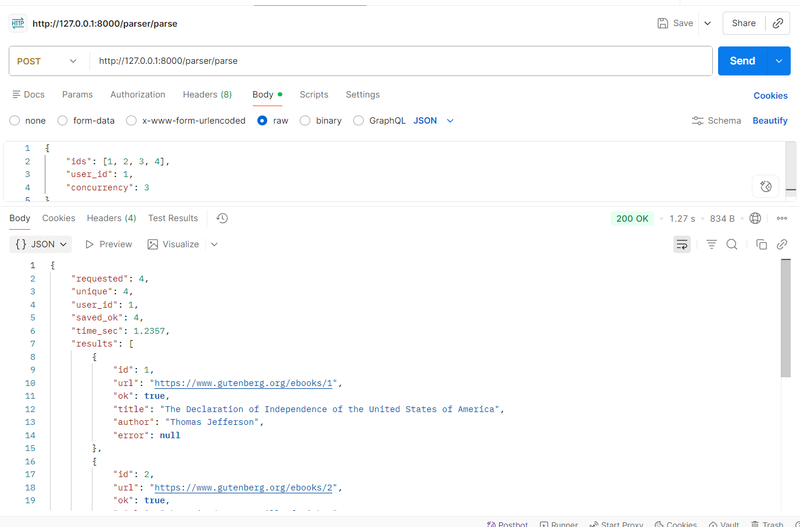
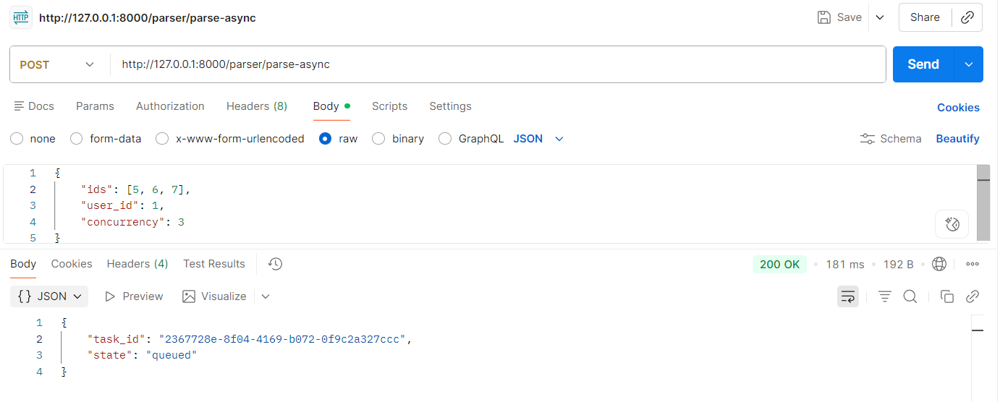
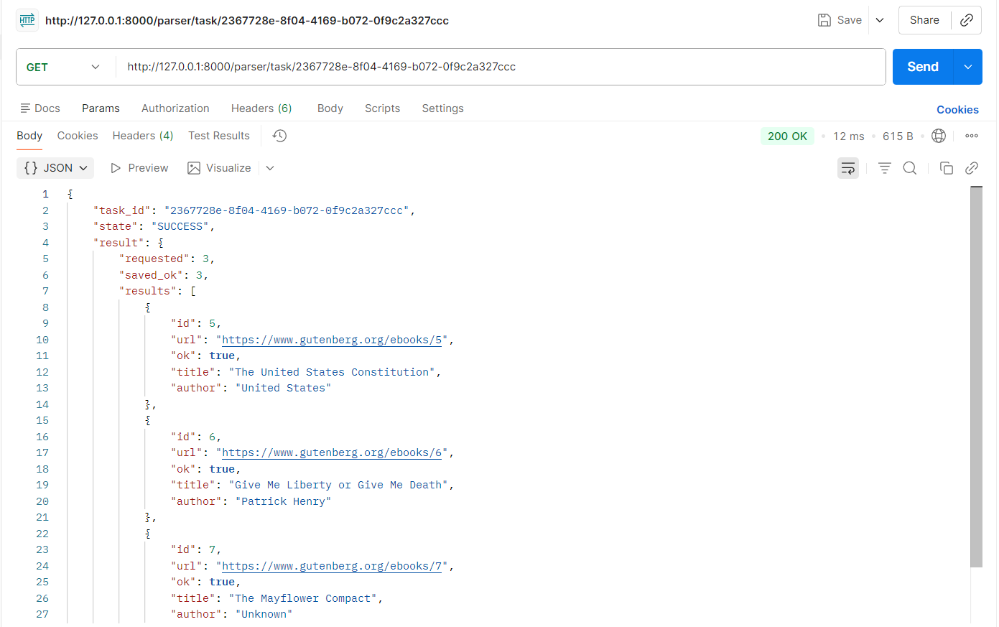

Лабораторная работа 3. Упаковка FastAPI приложения в Docker, Работа с источниками данных и Очереди
Цель работы:
Научиться упаковывать FastAPI приложение в Docker, интегрировать парсер данных с базой данных и вызывать парсер через API и очередь.
Подзадача 1: Упаковка FastAPI приложения, базы данных и парсера данных в Docker
- Создание FastAPI приложения: Создано в рамках лабораторной работы номер 1
- Создание базы данных: Создано в рамках лабораторной работы номер 1
- Создание парсера данных: Создано в рамках лабораторной работы номер 2
-
Реулизуйте возможность вызова парсера по http Для этого можно сделать отдельное приложение FastAPI для парсера или воспользоваться библиотекой socket или подобными.
-
Разработка Dockerfile:
-
Необходимо создать Dockerfile для упаковки FastAPI приложения и приложения с паресером. В Dockerfile указать базовый образ, установить необходимые зависимости, скопировать исходные файлы в контейнер и определить команду для запуска приложения.
-
Зачем: Docker позволяет упаковать приложение и все его зависимости в единый контейнер, что обеспечивает консистентность среды выполнения и упрощает развертывание.
-
Создание Docker Compose файла:
-
Необходимо написать docker-compose.yml для управления оркестром сервисов, включающих FastAPI приложение, базу данных и парсер данных. Определите сервисы, укажите порты и зависимости между сервисами.
- Зачем: Docker Compose упрощает управление несколькими контейнерами, позволяя вам запускать и настраивать все сервисы вашего приложения с помощью одного файла конфигурации.
Выполнение
Написание приложения для парсера
Внутри папки создаем файл parser_service.py в котором создаем приложение fastAPI. В нем создаем эндпоинт POST /parse
который будет принимать JSON (ParseRequest) тело с полями
- user_id пользователь, для которого сохранять результаты парсинга в базу данных,
- ids список ID книг для парсинга,
- concurrency максимальное количество одновременных запросов к сайту.
Метод parse_endpoint(): - удаляет дубликаты ID, - создает asyncio.Semaphore(concurrency) для ограничения параллельности, - создает по одной asyncio задаче на каждый ID и запускает их вместе с помощью asyncio.gather(). - каждая задача вызывает parse_one(id, http, sem): - строит URL https://www.gutenberg.org/ebooks/{id}, - скачивает страницу с помощью aiohttp внутри async with sem:, - парсит HTML с помощью парсера, - сохраняет результаты в базу данных (ParsedPage + Book с user_id=1, Status.ACTIVE, Condition.NEW).
После завершения всех задач parse_endpoint() возвращает JSON ответ с общей статистикой: общее количество, количество успешных, затраченное время и статус по каждому ID.
Код `parser_service.py`
from typing import List, Optional
import asyncio
import time
import aiohttp
from fastapi import FastAPI
from pydantic import BaseModel, Field
from connection import init_db, get_session
from models import Book, ParsedPage, Status, Condition
from lab2.ex2.parser import parse as parse_html
app = FastAPI(title="Parser Service")
class ParseRequest(BaseModel):
ids: List[int] = Field(..., min_length=1, max_length=200)
user_id: int = Field(..., ge=1)
concurrency: int = Field(default=8, ge=1, le=50)
class ParseItemResult(BaseModel):
id: int
url: str
ok: bool
title: Optional[str] = None
author: Optional[str] = None
error: Optional[str] = None
def build_url(book_id: int) -> str:
return f"https://www.gutenberg.org/ebooks/{book_id}"
def save_to_db(user_id: int, url: str, page_title: str, book_title: str, author: str, summary: str | None):
session = next(get_session())
try:
session.add(ParsedPage(url=url, title=page_title))
session.add(Book(
user_id=user_id,
title=book_title,
author=author or "Unknown",
description=summary,
status=Status.ACTIVE,
condition=Condition.NEW,
))
session.commit()
finally:
session.close()
async def parse_one(user_id: int, book_id: int, http: aiohttp.ClientSession, sem: asyncio.Semaphore) -> ParseItemResult:
url = build_url(book_id)
try:
async with sem:
async with http.get(
url,
timeout=aiohttp.ClientTimeout(total=20),
headers={"User-Agent": "Mozilla/5.0 (student parser)"},
) as resp:
resp.raise_for_status()
html = await resp.text()
data = parse_html(html)
title = (data.get("title") or "").strip() or "(no title)"
author = (data.get("author") or "").strip() or "Unknown"
page_title = (data.get("page_title") or "").strip() or title
desc = data.get("description")
save_to_db(user_id, url, page_title, title, author, desc)
return ParseItemResult(id=book_id, url=url, ok=True, title=title, author=author)
except Exception as e:
return ParseItemResult(id=book_id, url=url, ok=False, error=str(e))
@app.on_event("startup")
def startup():
init_db()
@app.post("/parse")
async def parse_endpoint(req: ParseRequest):
seen = set()
ids_unique: List[int] = []
for x in req.ids:
if x not in seen:
seen.add(x)
ids_unique.append(x)
sem = asyncio.Semaphore(req.concurrency)
t0 = time.perf_counter()
async with aiohttp.ClientSession() as http:
results = await asyncio.gather(*(parse_one(req.user_id, i, http, sem) for i in ids_unique))
t1 = time.perf_counter()
return {
"requested": len(req.ids),
"unique": len(ids_unique),
"user_id": req.user_id,
"saved_ok": sum(1 for r in results if r.ok),
"time_sec": round(t1 - t0, 4),
"results": [r.model_dump() for r in results],
}
Проверка парсинга:

Пишем Dockerfile для парсера:
Он устанавливает oython, необходимые зависимости для fastAPI приложения, копирует исходные файлы и запускает приложение на порту 8000. Также он открывает порт 8001 для доступа к API парсера.
FROM python:3.10-slim
WORKDIR /app
RUN apt-get update && apt-get install -y --no-install-recommends \
build-essential \
libpq-dev \
&& rm -rf /var/lib/apt/lists/*
COPY requirements.txt /app/requirements.txt
RUN pip install --no-cache-dir -r /app/requirements.txt
COPY . /app
EXPOSE 8000
EXPOSE 8001
CMD ["uvicorn", "main:app", "--host", "0.0.0.0", "--port", "8000"]
Пишем docker-compose.yml для всех сервисов:
Этот файл оркеструет запуск всех сервисов приложения вместе. Сначала он запускает базу данных PostgreSQL, затем выполняет миграции для создания таблиц, выполняет файл с добавлением пользователя, затем FastAPI приложение и парсер.
Код `docker-compose.yaml`
services:
db:
image: postgres:15
container_name: booksharing_db
environment:
POSTGRES_USER: postgres
POSTGRES_PASSWORD: postgres
POSTGRES_DB: booksharing
healthcheck:
test: [ "CMD-SHELL", "pg_isready -U postgres" ]
interval: 10s
timeout: 5s
retries: 5
ports:
- "5432:5432"
volumes:
- pgdata:/var/lib/postgresql/data
migrate:
build: .
env_file:
- .env
depends_on:
db:
condition: service_healthy
command: sh -c "alembic upgrade head"
seed:
build: .
env_file:
- .env
depends_on:
- migrate
command: sh -c "python seed_user.py"
main_app:
build: .
container_name: booksharing_main
env_file:
- .env
ports:
- "8000:8000"
command: uvicorn main:app --host 0.0.0.0 --port 8000
depends_on:
- seed
parser_app:
build: .
container_name: booksharing_parser
env_file:
- .env
ports:
- "8001:8001"
command: uvicorn parser_service:app --host 0.0.0.0 --port 8001
depends_on:
- seed
volumes:
pgdata:
Пишем файл для вставки пользователя, который будет использоваться по умолчанию для сохранения результатов парсинга в базу данных:
seed_user.py
import datetime
import os
from passlib.context import CryptContext
from sqlalchemy import create_engine, text
DB_ADMIN = os.getenv("DB_ADMIN")
if not DB_ADMIN:
raise RuntimeError("DB_ADMIN is not set")
engine = create_engine(DB_ADMIN)
def main():
with engine.begin() as conn:
pwd_context = CryptContext(schemes=['bcrypt'])
conn.execute(
text("""
INSERT INTO users (id, username, email, password, created_at)
VALUES (:id, :username, :email, :password, NOW())
ON CONFLICT (id) DO NOTHING
"""),
{
"id": 1,
"username": "seed_user",
"email": "seed_user@example.com",
"password": "seed_password"
},
)
if __name__ == "__main__":
main()
Выводы
В рамках задания был написан Dockerfile для контейнеризации приложения, а также файл docker-compose для оркестрации двух сервисов: основного приложения на порту 8000 и сервиса парсера на порту 8001. Дополнительно создан скрипт seed_user.py для добавления базового пользователя в базу данных. Это позволило развернуть два взаимосвязанных FastAPI приложения с автоматической инициализацией БД одной командой.
Подзадача 2: Вызов парсера из FastAPI
Эндпоинт в FastAPI для вызова парсера: * Необходимо добавить в FastAPI приложение ендпоинт, который будет принимать запросы с URL для парсинга от клиента, отправлять запрос парсеру (запущенному в отдельном контейнере) и возвращать ответ с результатом клиенту. * Зачем: Это позволит интегрировать функциональность парсера в ваше веб-приложение, предоставляя возможность пользователям запускать парсинг через API.
Выполнение
Добавим в .env файл ссылку на API парсера.
Добавим router endpoint в main app, который будут перенаправлять запрос.
Код `parser_proxy.py`
from typing import List
import os
import aiohttp
from fastapi import APIRouter, HTTPException
from pydantic import BaseModel, Field
router = APIRouter(prefix="/parser", tags=["parser"])
PARSER_SERVICE_URL = os.getenv("PARSER_SERVICE_URL")
class ParseRequest(BaseModel):
ids: List[int] = Field(..., min_length=1, max_length=200)
user_id: int = Field(..., ge=1)
concurrency: int = Field(default=8, ge=1, le=50)
@router.post("/parse")
async def parse_via_parser_service(req: ParseRequest):
url = f"{PARSER_SERVICE_URL}/parse"
try:
timeout = aiohttp.ClientTimeout(total=60)
async with aiohttp.ClientSession(timeout=timeout) as session:
async with session.post(url, json=req.model_dump()) as resp:
if resp.status >= 400:
detail_text = await resp.text()
raise HTTPException(
status_code=resp.status,
detail=f"Parser service error: {detail_text}",
)
return await resp.json()
except aiohttp.ClientError as e:
raise HTTPException(status_code=502, detail=f"Cannot reach parser service: {e}")
Проверка результата:

Выводы
В рамках данной подзадачи был реализован новый endpoint в основном FastAPI приложении, который принимает запросы на парсинг от клиентов, перенаправляет их на API парсера, запущенного в отдельном контейнере, и возвращает результаты обратно клиенту. Это позволило интегрировать функциональность парсера в основное приложение, обеспечив взаимодействие между двумя сервисами через HTTP запросы.
Подзадача 3: Вызов парсера из FastAPI через очередь
Celery - это асинхронная очередь задач для Python. Она позволяет выполнять долгие операции в фоне, не блокируя основное приложение.
Установим зависимости celery и redis в requirements.txt.
celery~=5.5.3
redis~=6.4.0
Создадим конфигурационный файл celery:
import os
from celery import Celery
REDIS_URL = os.getenv("REDIS_URL", "redis://redis:6379/0")
celery_app = Celery(
"booksharing",
broker=REDIS_URL,
backend=REDIS_URL,
)
celery_app.conf.update(
task_serializer="json",
result_serializer="json",
accept_content=["json"],
timezone="UTC",
enable_utc=True,
)
Заменим предыдущую логику парсинга на celery задачу в файле parser_service.py:
Код `parser_service.py`
import asyncio
from typing import List
import aiohttp
from celery_app import celery_app
from connection import init_db, get_session
from models import Book, ParsedPage, Status, Condition
from lab2.ex2.parser import parse as parse_html
def build_url(book_id: int) -> str:
return f"https://www.gutenberg.org/ebooks/{book_id}"
def save_to_db(user_id: int, url: str, page_title: str, book_title: str, author: str, summary: str | None):
session = next(get_session())
try:
session.add(ParsedPage(url=url, title=page_title))
session.add(Book(
user_id=user_id,
title=book_title,
author=author or "Unknown",
description=summary,
status=Status.ACTIVE,
condition=Condition.NEW,
))
session.commit()
finally:
session.close()
async def _parse_many(ids: List[int], user_id: int, concurrency: int) -> dict:
sem = asyncio.Semaphore(concurrency)
async def parse_one(book_id: int, http: aiohttp.ClientSession):
url = build_url(book_id)
async with sem:
async with http.get(
url,
timeout=aiohttp.ClientTimeout(total=20),
headers={"User-Agent": "Mozilla/5.0 (student parser)"},
) as resp:
resp.raise_for_status()
html = await resp.text()
data = parse_html(html)
title = (data.get("title") or "").strip() or "(no title)"
author = (data.get("author") or "").strip() or "Unknown"
page_title = (data.get("page_title") or "").strip() or title
desc = data.get("description")
save_to_db(user_id, url, page_title, title, author, desc)
return {"id": book_id, "url": url, "ok": True, "title": title, "author": author}
init_db()
async with aiohttp.ClientSession() as http:
results = await asyncio.gather(*(parse_one(i, http) for i in ids), return_exceptions=True)
normalized = []
ok = 0
for i, r in zip(ids, results):
if isinstance(r, Exception):
normalized.append({"id": i, "url": build_url(i), "ok": False, "error": str(r)})
else:
ok += 1
normalized.append(r)
return {"requested": len(ids), "saved_ok": ok, "results": normalized}
@celery_app.task(name="tasks.parse_books")
def parse_books_task(ids: list[int], user_id: int, concurrency: int = 8) -> dict:
return asyncio.run(_parse_many(ids=ids, user_id=user_id, concurrency=concurrency))
Обновим endpoint в parser_proxy для вызова celery задачи вместо прямого запроса к парсеру:
Код `parser_proxy.py`
from typing import List, Optional
from fastapi import APIRouter
from pydantic import BaseModel, Field
from celery.result import AsyncResult
from celery_app import celery_app
from parser_service import parse_books_task
router = APIRouter(prefix="/parser", tags=["parser-queue"])
class ParseAsyncRequest(BaseModel):
ids: List[int] = Field(..., min_length=1, max_length=200)
user_id: int = Field(..., ge=1)
concurrency: int = Field(default=8, ge=1, le=50)
@router.post("/parse-async")
def parse_async(req: ParseAsyncRequest):
job = parse_books_task.delay(req.ids, req.user_id, req.concurrency)
return {"task_id": job.id, "state": "queued"}
@router.get("/task/{task_id}")
def task_status(task_id: str):
r = AsyncResult(task_id, app=celery_app)
# r.state: PENDING / STARTED / SUCCESS / FAILURE
resp = {"task_id": task_id, "state": r.state}
if r.successful():
resp["result"] = r.result
if r.failed():
resp["error"] = str(r.result)
return resp
Обновим docker-compose.yaml, добавив redis и celery_worker:
Код `docker-compose.yaml`
services:
db:
image: postgres:15
container_name: booksharing_db
environment:
POSTGRES_USER: postgres
POSTGRES_PASSWORD: postgres
POSTGRES_DB: booksharing
healthcheck:
test: [ "CMD-SHELL", "pg_isready -U postgres" ]
interval: 10s
timeout: 5s
retries: 5
ports:
- "5432:5432"
volumes:
- pgdata:/var/lib/postgresql/data
migrate:
build: .
env_file:
- .env
depends_on:
db:
condition: service_healthy
command: sh -c "alembic upgrade head"
seed:
build: .
env_file:
- .env
depends_on:
- migrate
command: sh -c "python seed_user.py"
redis:
image: redis:7-alpine
container_name: booksharing_redis
ports:
- "6379:6379"
main_app:
build: .
container_name: booksharing_main
env_file:
- .env
ports:
- "8000:8000"
command: uvicorn main:app --host 0.0.0.0 --port 8000
depends_on:
- seed
celery_worker:
build: .
container_name: booksharing_celery
env_file:
- .env
environment:
- REDIS_URL=redis://redis:6379/0
depends_on:
- redis
- db
- migrate
- seed
command: celery -A celery_app.celery_app worker --loglevel=info
volumes:
pgdata:
Проверка результата:
Отправка запроса на парсинг:

Проверка статуса задачи:

Выводы
В рамках данной подзадачи была реализована интеграция Celery для выполнения задач парсинга в фоне. Был создан новый endpoint в основном FastAPI приложении, который принимает запросы на парсинг, ставит задачи в очередь Celery и возвращает ID задачи клиенту. Также был добавлен endpoint для проверки статуса задачи и получения результатов после её выполнения. Это позволило обрабатывать долгие операции парсинга асинхронно, не блокируя основной поток приложения, и обеспечило масштабируемость при увеличении количества запросов на парсинг.